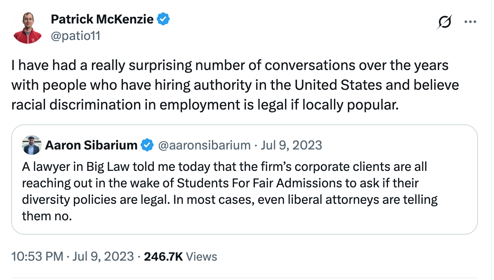
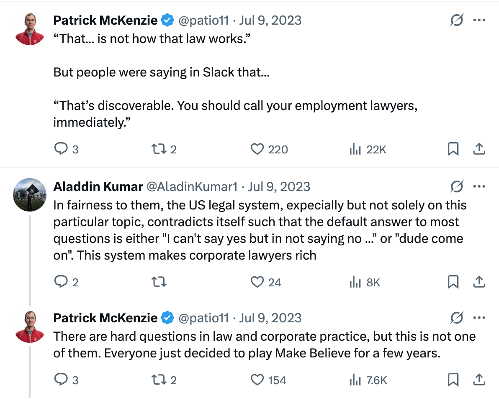

In the news:
White House Cancels $400 Million in Grants and Contracts to Columbia
Columbia Agrees to Trump’s Demands After Federal Funds Are Stripped
Columbia President Is Replaced as Trump Threatens University’s Funding
At my local cafe last week, some incensed folks asked: why didn’t Columbia have more courage? Why couldn’t the Ivy League band together and mount a hearty legal defense?
I think @patio11 has the right answer here:


I’d take essentially any odds on a wager that at some point in the past 10-15 years, some high-level administrators wrote, in their work emails, things that have been deemed unconstitutional in light of Students for Fair Admissions v. Harvard. I doubt Columbia is scared of SFA, but I bet they’re scared of the DOJ. I’d bet that some attorneys there would love to initiate FBI raids in a “how do you like it?” spirit. I don’t think the Columbia administration would be looking at jail time, but honestly, who knows?
If you had those kinds of skeletons, you’d probably fold too.
[Prompted by two conversations in the last week with folks who know a bit about the situation.]